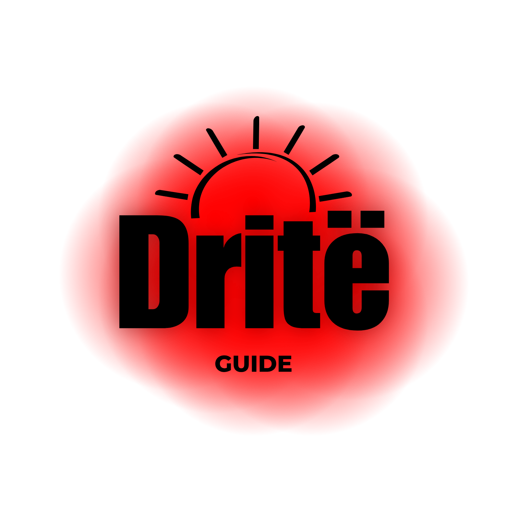

Dritë Guide është guida digjitale që lidh turistët me më të mirat e Shqipërisë: vende autentike, biznese lokale dhe përvoja që mbeten gjatë.
Ne jemi një ekip që beson se Shqipëria meriton të prezantohet më qartë, më bukur dhe më profesionalisht. Dritë Guide ndihmon udhëtarët të gjejnë vende të vlefshme dhe ndihmon bizneset lokale të shihen nga njerëzit e duhur.
Vendosim në pah vende, kultura, ushqim dhe përvoja autentike.
U japim bizneseve një prezencë më të fortë digjitale.
Lidhim turistët me vende dhe njerëz që ia vlejnë vërtet.
Ndërtojmë një platformë moderne për turizmin shqiptar.
Nga bregdeti te qytetet historike, nga ushqimi tradicional te mikpritja lokale, Shqipëria ka shumë për të treguar. Problemi? Shumë vende të mira nuk janë ende të dukshme online. Këtu hyn Dritë Guide.
Nëse ke restoran, bar, kafe, hotel apo një biznes turistik në Shqipëri, Dritë Guide të ndihmon të arrish turistë ndërkombëtarë para se ata të zgjedhin destinacionin e tyre.
Promovo biznesin tënd te udhëtarët që kërkojnë vende cilësore.
Shfaqesh në një platformë moderne, të pastër dhe profesionale.
Arrij njerëz të rinj dhe rrit rezervimet, vizitat dhe kontaktet.
Përfiton nga prezenca jonë digjitale dhe rrjetet sociale.
Bashkëpuno me ne dhe bëhu pjesë e udhëtarëve që vizitojnë Shqipërinë.
✉ info@driteguide.com
◎ @driteguide
🌐 www.driteguide.com